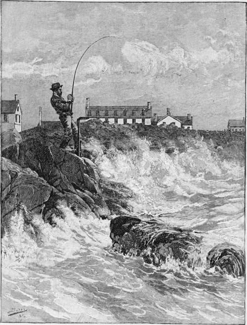

The Salmon. Part 5
Description
This section is from the book "American Game Fishes", by W. A. Perry. Also available from Amazon: American Game Fishes: Their Habits, Habitat, and Peculiarities; How, When, and Where to Angle for Them.
The Salmon. Part 5
"This victory was a surfeit for the morning. With other fish in full view, ready to give me a repetition of the grand sport I had already experienced, I made no other cast, and retired perfectly contented. The beautiful fish was laid down lovingly in the bottom of the canoe, and borne in triumph to the camp, where fish and fisher were given such a hearty welcome amid such hilarious enthusiasm as was befitting'the cause and the occasion.' "
In America there is no winter Salmon fishing, as there is in some livers in Scotland, for our Atlantic streams are all closed by ice. Once in a while, however, some tough old angler who has become inured to the vicissitudes of weather and hard knocks in general, and who "knows the ropes," will venture down to the Port Midway and other rivers of Nova Scotia in February, and capture some fine Salmon while the ice is running. The game, however, is hardly worth the candle. Most professional anglers make it a point to be on the Bay Chaleur streams by the first of June, and on the Lower St. Lawrence River about three weeks later. The Land-locked Salmon waters are open in Maine and Canada about the middle of May, and there is good fishing for Wananishe in most of the numerous tributaries of Lake St. John, Province of Quebec, about the same time. A month later the fish are plenty on the riffs of the Grande Discharge, or outlet of the lake; for which I would advise the use of light Salmon tackle, such as professiDnal Salmon anglers keep for a second outfit, as also for the Land-locked Salmon of Sebago, Toed's Pond, and other waters, which are apt to run up into the twenty-pound weights. For Salmon fishing, pure and simple-the old-fashioned Salmon fishing, where the rod has to stand a testful racket-I would choose a sixteen to eighteen foot rod. The advantages of length are obvious to any one of experience on the heavier Canadian streams, and one need not be talked out of his common sense by the current hue and cry about light rods. The man who talks "light rod" has never fished where heavy rods are needed, and is not Competent to coach. He does not comprehend the first principles of the situation. A wooden rod is apt to be heavier than a split bamboo in proportion to its length; but all else being equal, the life of a wooden rod is the longest. Any rod whatever which is too heavy to wield without the aid of a waistband and thimble, should be discarded. These long, heavy rods are in request for heroic work in wicked waters, when the wind is stiff, and the fishing may be called taxing. Second rods are better adapted for switching where casting room is restricted, and for use in calm days and quiet pools. Whenever one can use this lighter rod, the climax of pleasure is reached. The reel should be heavy enough to balance the rod, made of nickel and rubber, with crank enclosed by a flange, so as not to catch the line, and the line should be as light as one can possibly make good casting with. One hundred yards of oiled silk are enough, unless your fish flops into a rapid, when you will want a thousand. A bulky line shows in the water; a line that is light for its bulk is of small use in casting against a wind, and one that is hard and stiff is too long in running straight out into the water. A correct line is as essential as a correct rod. Let it be perfectly pliable, and yet have enough substance in it to make it feel quite solid. As to selection of flies, the most killing for mid-season are the Josh Scott, Silver Doctor, rind Turkey Wing-the brightest later on. These are chief among six patterns selected by a composite jury of all the best anglers of Great Britain. Yellow Mohair and Golden Pheasant are the best for early rivers. In the evening, when the light goes off the water, large flies and brighter colors can be used with effect. A silver body does well, and jungle-cock feather shows up finely. As to size of flies, one universal proverb will always stand: Large flies for heavy and deep water; larger flies for waters which run rapid and rough than for those which run shallow and quiet; large flies for evening fishing, and large flies for early spring fishing. In these later years I have learned to use double snoods. Upon the whole, I find Salmon less capricious than Trout. The truth is, on a booming river, or when the Salmon are in a taking mood, they are not particular as to the kind of fly they take. There is a good deal of fresco work in the talk about killing-flies and favorites. Pedantry will often count for more than common sense, but it does not carry as far.
An Exciting Moment.
Fish rise best the moment when the river begins to come out. In some cases they will rise until the water becomes so dirty that they cannot see, but in general the spurt will not last over an hour. This, however, is not the time to fish. No use to waste time when the fish are turning flip-flaps all over the stream. Once, on a moonlight night, they made such a constant commotion in the river that I could not sleep-what a night that was! Not a cloud or a whiff of wind. The river was alive with them. The best time to fish is the moment when the fish become quiet and begin to choose their resting-places, and the river runs clear enough for them to see the fly.
In a colored river, the shallowest parts should be fished, because the fish can see better there than in deep water. An old angler, in one of the English sporting papers, observes that "many young anglers raise a great many fish and fail to hook them. Even some long-experienced anglers get into this habit, and never get out of it. The reason of this is, they cast too straight across the stream, and keep the point of their rod too high. The fly travels round too fast, and the fish make a dash at it and fail to catch it. The fly should go straight out, the cast should be made well down the river, the point of the rod kept nearly touching the water, and the fly allowed to sink well down. The rod should be worked slowly when the fly has nearly come over the cast."
Continue to: